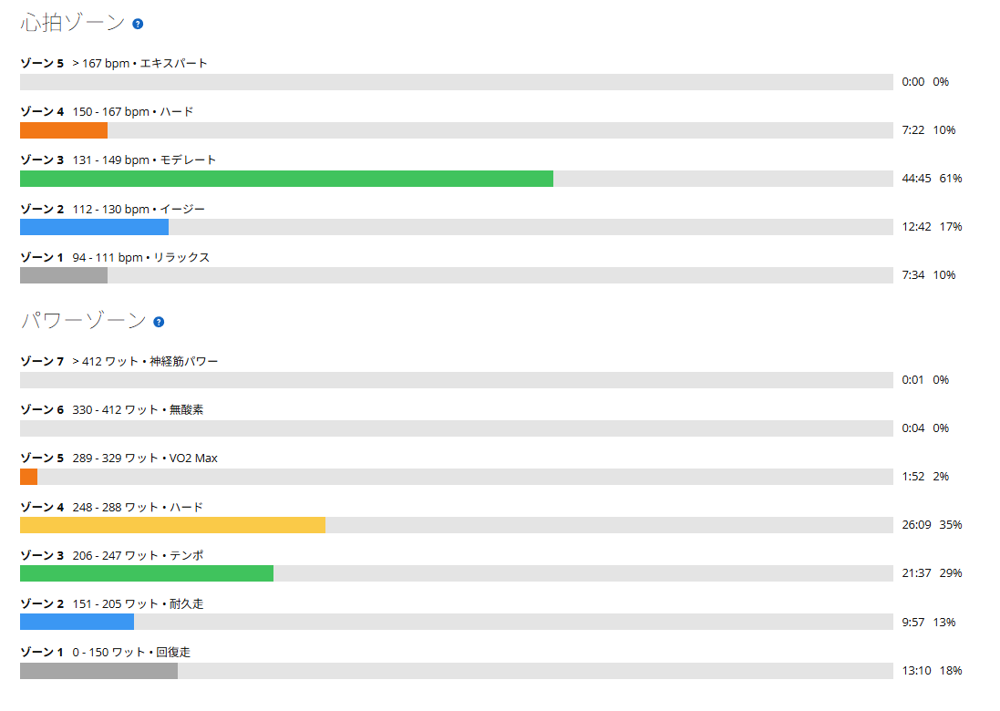

251Wと249W。差2Wは25分×2で一番揃った
今日はローラーで25分×2。最近は20分×3をやることもあったけれど、いったん25分×2に戻している。理由は単純で、まず50分のONをきれいに安定してまとめたいのと６０分は辛いからである。
結果は1本目251W、2本目249W。差は2W。そして今日は、最初の10分だけ少し変わったことをした。

38.88km・NP232W・TSS86.0
- 全体38.88km / 1時間12分53秒 / 運動負荷158
- 負荷平均218W / NP232W / IF0.845 / TSS86.0 / 最大458W / 20分最大252W
- 心拍・回転平均135bpm / 最大162bpm / 平均82rpm
- 環境平均29.0℃ / 最高30.0℃ / 推定発汗1,171ml
- 効果有酸素TE3.7 / 無酸素TE0.0
パワーゾーンはゾーン4が26分09秒、ゾーン3が21分37秒。この2つだけで47分46秒で、狙っていた帯域にほぼ全部入っている。心拍もゾーン3が44分45秒で61%、ゾーン4は7分22秒だけ。持続系としては素直な形になった。
1本目は251W。最初の10分はギアを1分ごとに動かした
- 1本目25分02秒 / 251W / 平均心拍140bpm / 平均85rpm
今日の新しい試みがこれである。最初の10分は、1分ごとにギアを1枚上げ下げした。ケイデンスを95rpm前後と80rpm台に行き来させながら、パワーだけは同じところに置いておく。
やってみると、同じパワーでも回転数が違えば踏み方はかなり変わる。高い回転数では、少し軽く回しながらパワーを作る感じ。低めの回転数では、もう少し重さを受けながら踏む感じ。出力の数字は同じでも、身体の使い方が別物になる。10分を過ぎてからはギアを少し重くして、85rpm前後で落ち着かせた。
2本目は249W。1本目との差は2W
- 2本目25分11秒 / 249W / 平均心拍146bpm / 平均85rpm
- 2本の差2W（前回8月12日は259Wと254Wで5W差）
5分レストを挟んで2本目。251Wに対して249W、差は2Wである。ケイデンスも両方85rpmで揃った。25分×2としては、これまでで一番揃っている。前回は259Wと254Wで5W差だったので、出力は8W下がったが、揃い方は良くなった。
体感としては、前より余力はある。でもメニュー自体が楽になったわけではなく、普通にきつい。「もう無理」ではないし、「余裕だからもっと上げよう」でもない。その間くらい。この感覚が今はちょうどいいのだと思う。

同じ85rpmでも、実走とローラーでは重さが違う
最近は実走でも85rpm前後を使うことが増えてきた。でも、同じ85rpmでもローラーと外ではかなり違って感じる。実走の方が楽である。
外なら身体全体を使える。重心も移動できるし、バイクも少し動かせる。路面や勾配に合わせて姿勢も微妙に変えられる。でもローラーは、同じ場所で同じ動作をずっと続ける。だから数字が同じでも、身体にかかる「重さ」が違う。今日もローラーの85rpmはやっぱり重く感じた。
まず25分×2を安定させて、その次に20分×3へ
最近は20分×3をやることもあった。20分×3ならONの合計は60分、25分×2なら50分。どちらも似ているようで、やってみるとかなり違う。1本あたりの長さが5分違うだけで、後半の重さがまるで変わる。
今はまず25分×2を安定させたい。出力を上げることより、2本を揃える。フォームを崩さない。最後まで一定に踏む。そちらを優先する。今回の251Wと249Wは、その意味ではかなり良かった。
これが安定してきたら、また20分×3へ戻す。今すぐ戻す必要はない。まずは25分という長さを「普通に最後までこなせる」ところまで持っていきたい。それができたら次は20分を3本で合計60分。短い高出力ではなく、長く一定で踏み続ける力を少しずつ増やしていく。
今日やってみて思ったこと
前より余力はある。でも、やっぱりきつい。このくらいが今はちょうどいい。1本目251W、2本目249W、ケイデンスは両方85rpm。最初の10分は回転数を変えながら、後半は少し重いギアで落ち着かせた。
同じパワーでも、ケイデンスで感覚は変わる。同じ85rpmでも、実走とローラーでは重さが違う。最近は単純に「何W出たか」だけではなく、どうやってそのパワーを作ったかの方が気になるようになってきた。
まずは25分×2を安定。その先に20分×3。今はこの順番でいこうと思う。
次に見るポイント
- 揃い方250W前後で2本の差5W以内を、もう一度出せるか
- ケイデンス変化1分ごとの上げ下げを、10分より長く続けられるか
- ローラーと実走の差同じ85rpmの重さの違いが、乗り込むうちに縮まるか
- 次の段階25分×2が安定したあと、20分×3へ戻して合計60分を保てるか